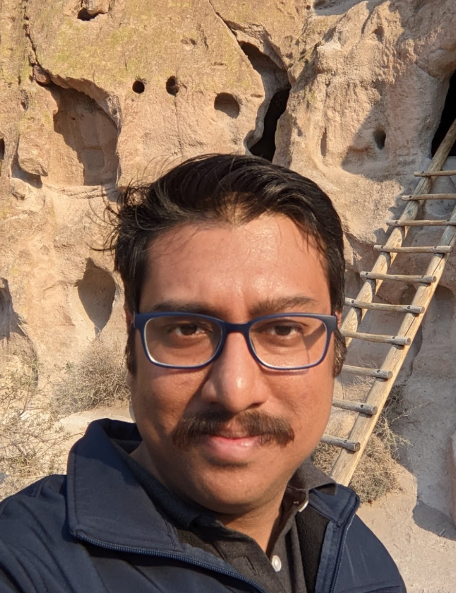

Soumendu Majee
Imaging Researcher — Samsung Research America
I am an imaging researcher at Samsung Research America. Previously, I was a Postdoctoral Research Associate at Los Alamos National Laboratory. I earned my PhD in Electrical and Computer Engineering from Purdue University under Prof. Charles Bouman and Prof. Gregery Buzzard. I also worked at the Advanced Photon Source at Argonne National Laboratory and received my B.Tech from the Indian Institute of Technology, Kharagpur.
My doctoral work focused on computational imaging for tomographic applications, with collaborations spanning Eli Lilly, Canadian Light Source, Argonne National Laboratory, General Electric, Northrop Grumman, and the Air Force Research Laboratory.
Research interests: signal and image processing, pattern recognition, and communication.
Affiliations
Recent News
- 2024 Received the President's Award for High Mega-Pixel AI Multi-Frame Processing at Samsung Research America.
- 2024 Received the CTO Award for Tele Tetra AI Multiframe Zoom featured in the Galaxy S24 Ultra.
-
2022
Featured in a Samsung interview on the engineering behind Galaxy Z Fold4's under-display camera technology.
Read the interview →